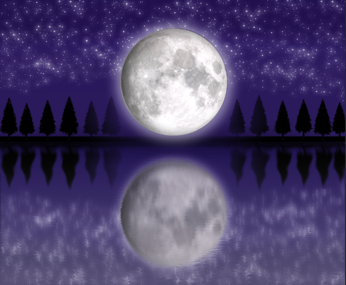
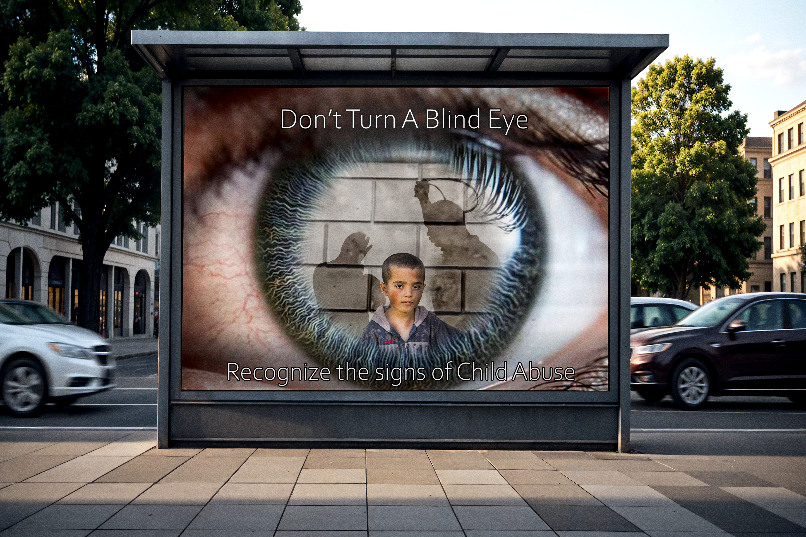

1-Moon Art
This picture was something I made during highschool. I had wanted to make the Moon the main subject of this piece.
2-Child Abuse Campaign
I made this mockup for my portfolio review in 2026. This is a small campaign to raise awareness to Child Abuse by looking out for certain signs.
3-Randy's Donut

I made this GrayScale of Randy's Donut for one of my classes. It was a simple assignment of taking a picture that we took and converting it into a drawn GrayScale.
4-Book Cover

I made this book cover in my Graphic Design class. The purpose of this was to express how the concept beauty has changed thoughout the years.